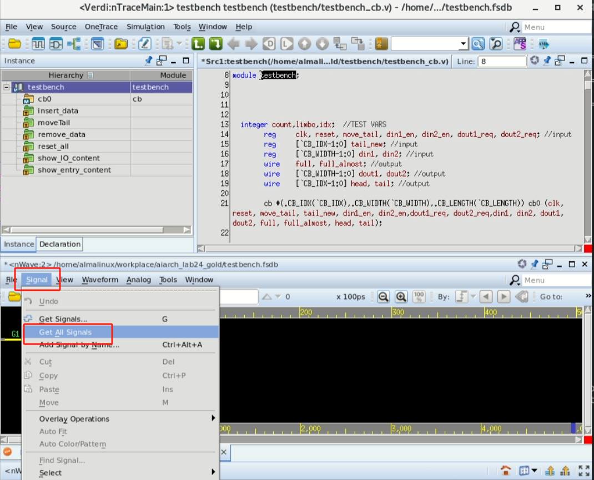

Linux使用
Linux常见指令
- linux使用指令操作
- 下面给出一些最常用的
ls -a # 列出当前目录内的所有文件 cd <dir> # 进入某个目录（directory，相当于文件夹） rm <file_name> # 删除文件 mv <file_addr> <new_addr> # 将文件从一个位置移动到另一个位置 cp <file_addr> <new_addr> # 将文件从一个位置复制到另一个位置 mkdir <dir> # 创建一个目录 chmod <参数> <filename> # 改变文件的权限
代码开发
- 推荐同学们使用VS Code远程ssh连接服务器，在VS Code中进行代码的开发，用VS Code连接远程服务器教程见此网站
- 如果有使用linux较为熟练的同学也可以直接使用VNC连接CLAB服务器使用Vim进行开发，Vim教程可自行上网搜索
- 若使用VS Code开发，服务器需要联网
- 具体方法：先用powershell ssh连接到服务器，输入
python /opt/login.py之后输入自己校内门户账号密码即可
Lab实际运行代码方法
- 发布的Lab在
/opt/Lab1目录中，同学们仅有只读权限，需要同学们在本地建一个副本，以建在桌面~/Desktop目录为例
cp /opt/aiarch_lab24_lab1 ~/Desktop/Lab1 # 将Lab代码复制到桌面
cd ~/Desktop/Lab1 # 进入Lab代码目录模块测试
- 完成模块的编写后，需要对模块进行编译仿真，此时可以使用
make指令，也可以针对某个对应模块编译相应的testbench
make -f <makefile_name> all # 自动完成编译、仿真
make -f <makefile_name> clean # 清理不需要的结果
make -f <makefile_name> nuke # 更彻底的清理不需要的结果- 比如，假如需要对单个dcache模块进行debug，可以找到对应dcache模块的makefile，在terminal中输入
make -f Makefile.dcache clean make -f Makefile.dcache all- 此时testbench将会将内部设置的一些测试task的结果输出到terminal中，可以按照对应结果进行debug
- 如果想要进一步进行波形的debug，可以输入
make -f Makefile.dcache verdi打开verdi，选择下方窗口中的Signals —— Get all signals即可打开所有信号的波形

{kind=link}
整体测试
- 整体测试会对一些汇编程序跑整个OoO CPU的仿真，并与标准五级流水线的CPU输出做比较
make nuke
make all
./run_tests.sh # 该脚本为grading程序，可以看自己是否通过了我们给出的testcase脚本将给出test_program的通过情况，我们的评分也会基于该通过情况酌情给分